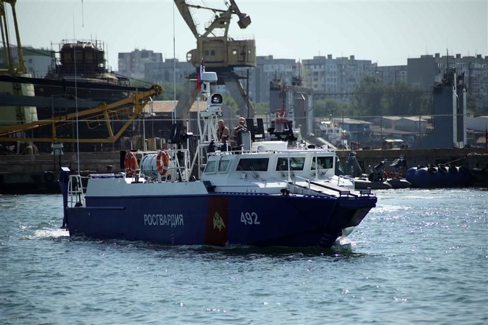
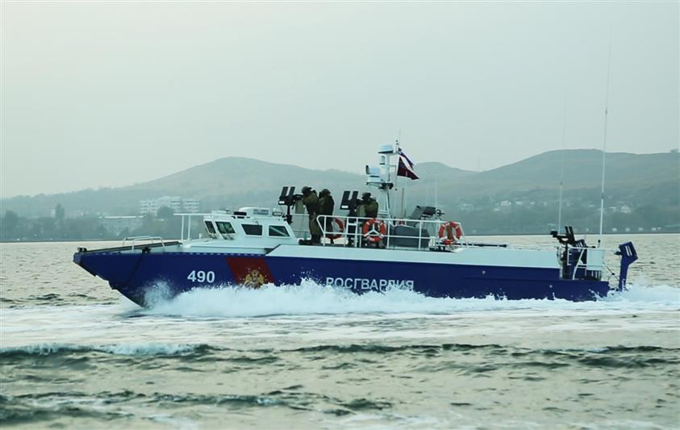
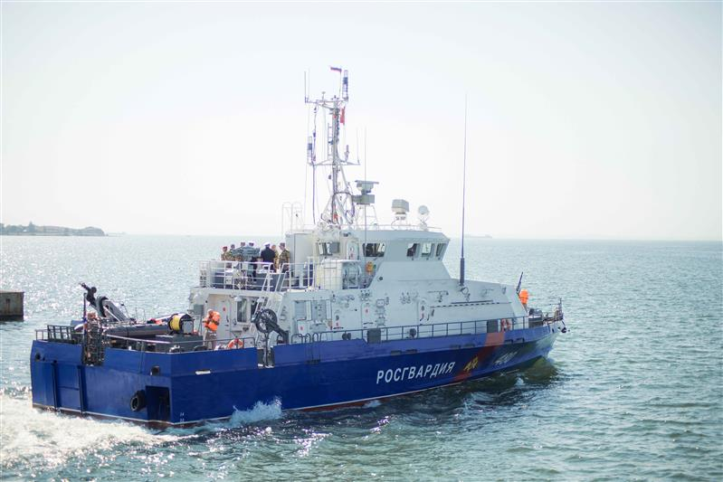
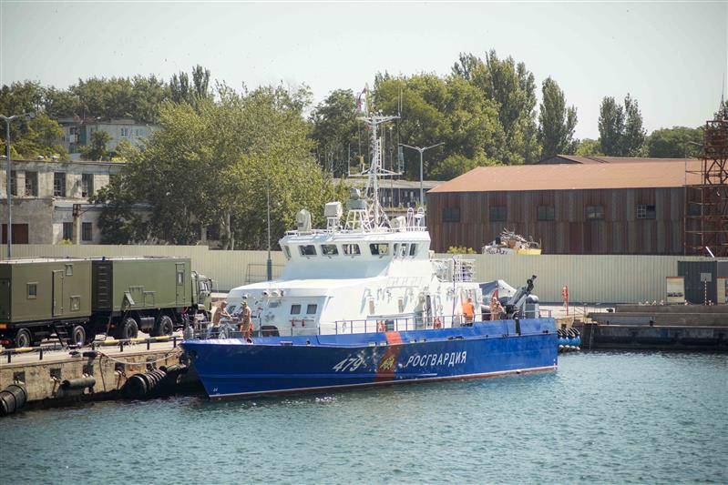
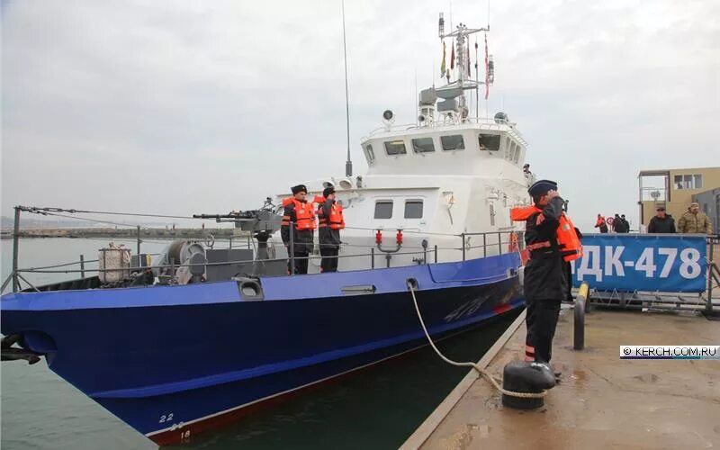
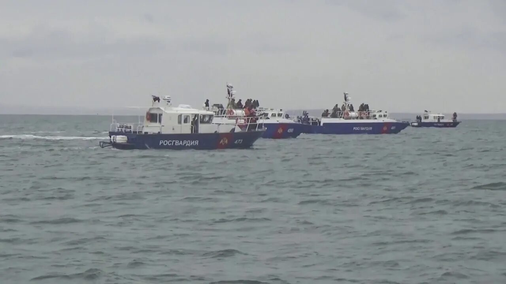

Отдельная бригада особого назначения войск национальной гвардии Российской Федерации, дислоцированная в Республике Крым, приступила к выполнению служебно-боевых задач по обеспечению общественной безопасности и защите морских рубежей полуострова.
Военнослужащие соединения провели слашивание подразделений, заступили на маршруты боевого патрулирования и вышли в море на штатных катерах. Особое внимание уделено взаимодействию береговых расчётов и корабельных групп: экипажи отработали маневрирование в условиях волнения, связь и действия при обнаружении условных нарушителей акватории.
«Бригада готова к выполнению задач по предназначению. Личный состав обучен, вооружение и техника приведены в боевую готовность. На море, как и на суше, мы всегда на страже», — отметил начальник территориального управления Росгвардии.
В ходе выходов в море расчёты отработали артиллерийские залпы по дрейфующим щитам-мишеням: корректировка огня велась по всплескам и дымным маркерам, стрельба выполнялась на ходу с учётом качки и бокового ветра.
Из истории соединения
Подразделения росгвардейской бригады ведут свою линию от частей охраны правопорядка, стоявших на крымской земле с первых лет формирования службы. Сегодня соединение объединяет подразделения специального назначения, морские расчёты, военных кинологов и расчёты разминирования.
Геральдический знак — эмблема войсковой части 6939 — утверждён приказом Федеральной службы войск национальной гвардии Российской Федерации от 15 октября 2020 года № 404 и подчёркивает особую роль соединения: грифон с ключом стоит над золотым мостом, опирающимся на синюю морскую оконечность щита.






Служебно-боевые задачи
К ним относятся: охрана общественного порядка и обеспечение безопасности в акваториях, прикрытия госграницы на морских направлениях, борьба с незаконными рыбными промыслами, сопровождение караванов и взаимодействие с пограничными ведомствами. Личный состав бригады ежедневно подтверждает девиз части — «Всегда на страже».